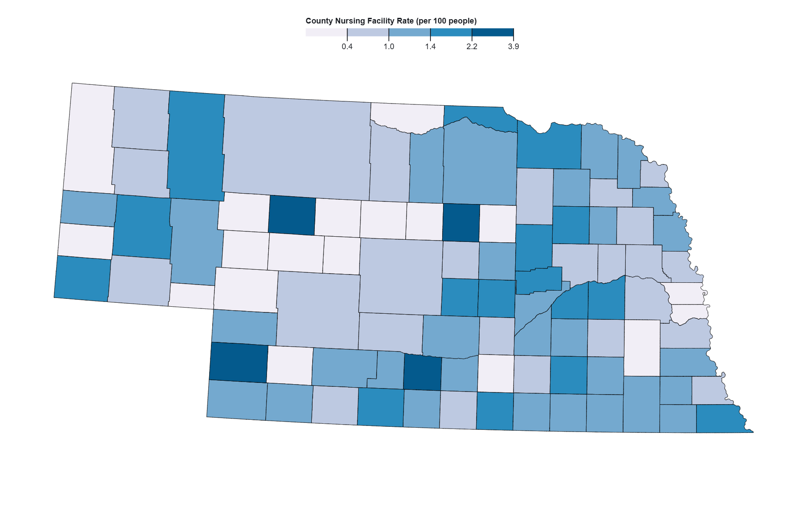
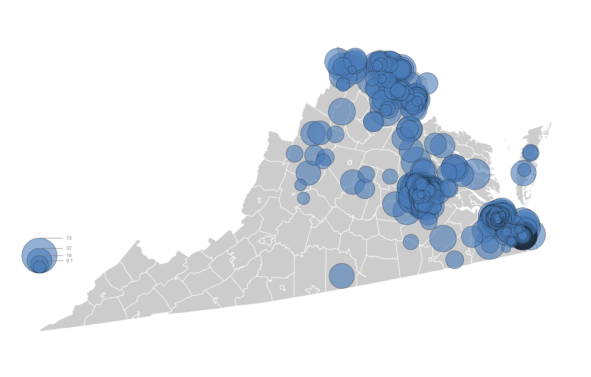
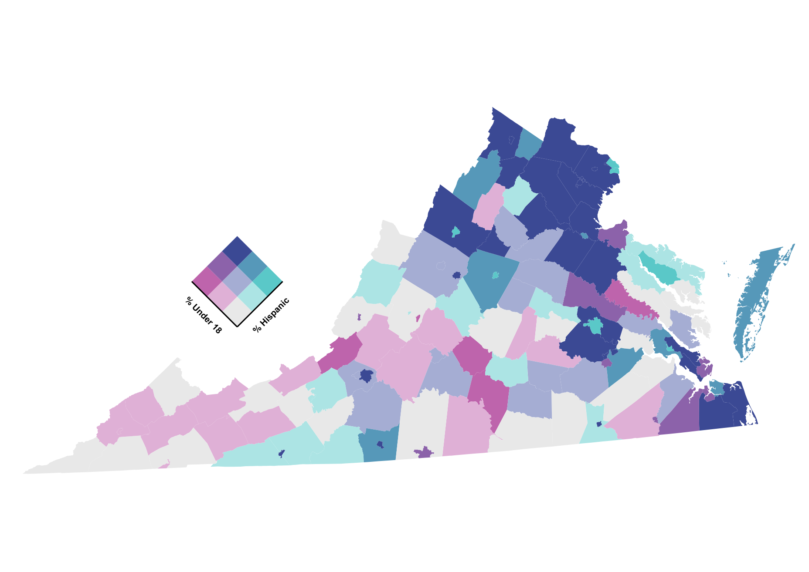
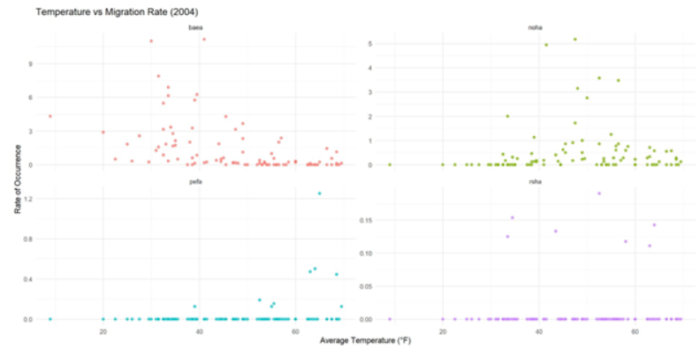
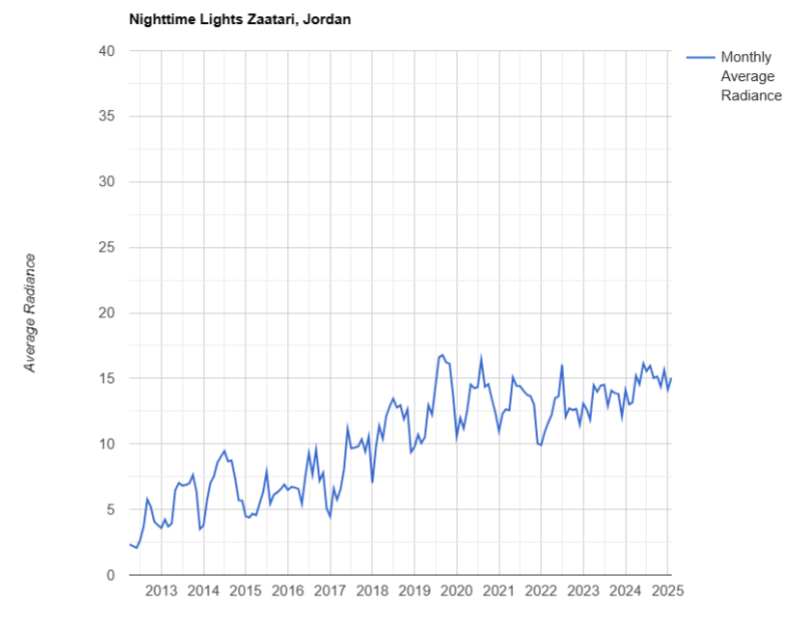

Geographic Visualization Portfolio Eleanor Cooper-Ohm

Nebraska Nursing Facilities per Person
This project visualizes the rate of nursing‑facility residents per 100 people across Nebraska’s 93 counties using a choropleth map built in Observable. I joined county‑level Census data to Nebraska’s county boundaries using FIPS codes, calculated per‑capita nursing‑facility rates, and applied a five‑class natural breaks classification to highlight meaningful spatial patterns. The map reveals clusters of higher rates in eastern Nebraska near population centers and lower rates across rural western counties.!

Virginia Cold Cases
This project maps cold case locations across Virginia using proportional circles sized by the number of years since each crime. The map reveals clusters of older cases in major metropolitan regions such as Richmond, Norfolk, and Northern Virginia, with more recent cases spread across rural counties.

Distribution of young people and Hispanic Populations in Virginia
This project maps two demographic variables in Virginia- percent of population under 18 and percent Hispanic- using a 3×3 bivariate choropleth color scheme. County geometries from a TopoJSON file were joined with ACS demographic data using the shared GEOID field, and both variables were classified into low, medium, and high categories using quantiles. The map reveals strong regional patterns, including high‑high clusters in Northern Virginia and low‑low clusters across the rural southwest. A custom rotated legend helps readers interpret how the two variables combine spatially.

Interstate Migration Flowmap 1887-1924
This project visualizes interstate migration flows in the United States from 1887 to 1924 using a combination of nodes, proportional flow lines, and a choropleth background. The visualization reveals strong south‑to‑north and west‑to‑east migration patterns, with the Midwest and Great Lakes region emerging as major destinations and several southern states acting as key sources. Together, the flow lines and choropleth provide a clear picture of how economic change and industrial expansion shaped population movement during this period.

Raptor Geodatabase
This project builds a spatial database to analyze twenty years of raptor migration patterns at two Iowa HawkWatch sites: Hitchcock along the Missouri River and Grammar Grove along the Iowa River. We integrated point‑based raptor observations with weather records, historic vegetation, major water bodies, and conservation areas to explore how environmental conditions relate to migration counts.

Detecting Conflict with Nighttime Lights
This project uses VIIRS nighttime lights data to compare changes in radiance over time in Damascus, Syria, and the Zaatari Refugee Camp in Jordan. Monthly average radiance charts show Damascus steadily dimming as conflict damages infrastructure and displaces residents, while Zaatari grows brighter as the camp expands to support incoming refugees. The analysis demonstrates how nighttime lights can reveal population movement and conflict impacts when on‑the‑ground data is limited.

Comparing Soil Contamination & Infant Mortality in Nevada, U.S.
This geographic visualization project attempts to provide insight into current infant mortality and Cesium levels across Nevada Counties, and areas around the Nevada Nuclear Testing Site (NTS). Our maps represent county census data for infant mortality rates to be visually compared with Cesium-137 soil contamination. Cesium is an ideal isotope for mapping nuclear fallout since it is a highly volatile product of nuclear fission. This project uses Cesium contamination data to assess the fallout area of the 12 years of atmospheric nuclear testing preformed at the NTS. Since cesium-137 products have a long half-life (~30 years) the isotope is a persistent marker of environmental contamination even decades after the last atmospheric test. This project is to provide geographic visualization and color scheme pattern interpretation not make statistical claims. These maps are to spread awareness of the potential risks of living nearby testing facilities and make this data accessible for Nevada residents to support public health initiatives.